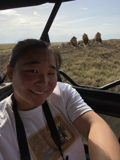

<H1 style= "text-align: center;">
About Me </b></h1>
Hi everyone! My name is Amy Huang, I'm currently a second semester junior living in Currier House concentrating in economics with a secondary in psychology and I'm originally from San Diego, California. Some of my hobbies include hiking, traveling and going to the beach! I used to be on the tennis but I medically retired this semester.
Last fall, I took a leave of absence and lived in Taiwan for two months with a friend. This past summer, I did a month-long study abroad program in Tanzania where I saw a lot of really cool animals and got to camp in national parks.
Here is a picture of me in Tanzania with some cool lions!

<br>
And here is a <a href="./index.html">link</a> back to my homepage!